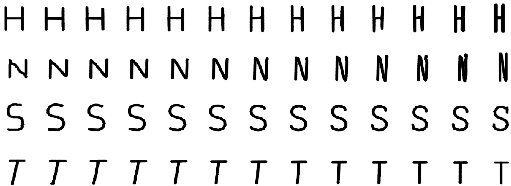

<!DOCTYPE html>
<html lang="pt">
    <head>
        <meta charset="UTF-8">
        <meta name="viewport" content="width=device-width, initial-scale=1.0">
        <title>Alta & Baixa | Uma Revista Tipográfica</title>
        <!-- Estilos -->
            <!-- Google Fonts Import -->
                <link rel="preconnect" href="https://fonts.googleapis.com">
                <link rel="preconnect" href="https://fonts.gstatic.com" crossorigin>
                <!-- GFS Didot -->
                <link href="https://fonts.googleapis.com/css2?family=GFS+Didot&display=swap" rel="stylesheet">
                <link href="https://fonts.googleapis.com/css2?family=Merriweather:ital,wght@0,300;0,400;0,700;0,900;1,300;1,400;1,700;1,900&display=swap" rel="stylesheet">
            <!-- =================== -->
            <link rel="stylesheet" href="./styles/root.css">
            <link rel="stylesheet" href="./styles/general.css">
            <link rel="stylesheet" href="./styles/spanToBrush.css">

            <link rel="stylesheet" href="./styles/pages/article.css">
            <link rel="stylesheet" href="./styles/pages/articles/general.css">

            <link rel="stylesheet" href="./styles/pages/articles/using-autoencoders-to-generate-skeleton-based-typography/style.css">

        <!-- ======= -->
   <!--icon da aba do topo do site :)-->
   <link rel="icon" href="imgs/icon.png" type="icon">
        <!-- p5js -->
        <script src="https://cdn.jsdelivr.net/npm/p5@1.4.0/lib/p5.js"></script>


        <script src="./js/config/sectionToDraw.js"></script>
        <script src="./js/pages/articles/generateArticle.js"></script>
    </head>
    


    <!--
        BODY
     -->

    <body>
        <!-- div q tem o canvas para desenhar :) -->
        <div id="canvasBrush" class="fixado"></div>
        <!-- header -->
        <script src="./js/config/createNavigation.js"></script>
        <script>createNavigation("./imgs/setinha.png");</script>


        <script src="./js/components/infoComponent/createInfo.js"></script>
        <script>createInfo();</script>
        <main>
            <!--ponto introdução-->
            <div
                class="viewport" id="tit01" tit="1"
                txt="Introduction"
            >
            </div>
            <script>
                generateArticle(
                    document.getElementById("tit01"),
                    `
                    <p>
                        The design of type has undergone numerous
                        changes over time [4]. In the early years,
                        typography was seen as a system made up
                        of a series of rules. The artistic movements that
                        arrived at the beginning of the twentieth century rejected the historical forms and transformed
                        outdated aspects of visual language and expression.
                        However, projects that combined software, arts
                        and design only appeared a few years later with the
                        proliferation of personal computers, allowing programming to reach a wider audience. Thanks to all
                        these changes, the tools to design type changed, and
                        new possibilities for typographic experimentation
                        appeared, resulting in (i) grammar-based techniques
                        that explore the principle of database amplification (e.g. [2]); (ii) evolutionary systems that breed
                        design solutions under the direction of a designer
                        (e.g. [22, 15]); (iii) or even, Machine Learning
                        (ML) systems that learn the glyphs features to build
                        new ones (e.g. [14]) [18]. These computational
                        approaches can also be helpful as a starting point of
                        inspiration. 
                    </p>
                    <p>
                        Most emerging fonts continue to be developed by
                        type designers who study the shape of each letter
                        and its design with great precision, despite the
                        emergence of these new possibilities. Type design
                        is a hugely complex discipline, and its expertise
                        ensures typography quality [28]. Moreover, with
                        the proliferation of web typography and online
                        reading, the use of variable and dynamic fonts has
                        increased, allowing more options for font designers and font users. Additionally, visual identities
                        created nowadays are becoming more dynamic
                        [17]. Museums, institutions, organisations, events
                        and media increasingly rely on this type of identity.
                        Consequently, designers should adapt their work to
                        these new possibilities by creating dynamic identities with animations and mutations. Even though
                        new computer systems create expressive and outof-the-box results, they do not have the knowledge
                        of an expert. But this is also an advantage, allowing
                        non-arbitrary exploitation that extends the range
                        of possibilities. It is necessary to create a balance
                        to take advantage of the computational systems
                        and the expert labour. Moreover, most generative
                        systems that design type focus on the letters’ filling
                        and don’t see the structure of a glyph as a variation
                        parameter.
                    </p>
                    <p>
                        To overcome these limitations, we propose an
                        Autoregressive model [9] that creates new glyph
                        skeletons by the interpolation of existing ones.
                        Our skeleton-based approach uses glyphs skeletons
                        of existing fonts as input to ensure the quality of
                        the generated results. The division of the structure
                        and the filling of the glyphs add variability to the
                        results. Different glyphs can be created by just
                        changing the structure or the filling. The proposed
                        approach enables the exploration of a continuous
                        range of font styles by navigating on the
                        Autoencoder (AE) learnt latent space.
                        With the results of this approach, it is also possible
                        to apply different filling methods that use the stroke
                        width of the original letters to produce new glyphs
                        (see <em>Figure 1</em>).
                    </p>
                    <figure>
                        
                        <figcaption><em>Figure 1</em> |  Interpolation of the skeleton and stroke width from two existing A’s
(light blue and red) resulting in a new A (dark blue). </figcaption>
                    </figure>
                    <div></div>
                    <p class="magentaBox">
                        The remainder of this paper is divided into three
                        sections. The following section, Related Work,
                        analyzes related projects in the domain of computational typography with Artificial Neural Networks
                        (ANNs). The second section, Approach, describes
                        the construction of the used dataset and explains the
                        training process. Then, in the Results section, we
                        present and discuss the different exper- imentations
                        performed and the obtained results. In this section,
                        we also present a set of different possible applications of the outputs of our system. In the final
                        section, Conclusion and Discussion, we draw some
                        conclusions and lay out future work.
                    </p>
                    `,
                    undefined,
                    false
                );
            </script>


            <!-- PONTO 2 related work -->
            <div
                class="viewport" id="tit02__0" tit="2"
                txt="Related Work"
            >
            </div>
            <script>
                generateArticle(
                    document.getElementById("tit02__0"),
                    `
                    <p>
                        Over time, the methods and technologies
                        available for type design have improved
                        and designers have to evolve and adapt
                        their process of thinking in accordance.
                        Generative Adversarial Networks (GANs) have
                        revealed impressive advances, presenting
                        high-resolution images nearly indistinguishable
                        from the real ones. In the typographic field,
                        they are helpful when one wishes to obtain
                        coherent glyphs in a typeface. When designing
                        a typeface, one has to simultaneously seek an
                        aesthetically appealing result and coherence
                        among the different glyphs. This can be
                        facilitated by exploring the similarities
                        between the same letter present across 
                        diverse fonts,and the transferred stylistic
                        elements within the same font [5]. Balashova
                        et al. [2] develop a stroke-based geometric
                        model for glyphs, a fitting procedure to
                        re-parametrize arbitrary fonts to capture
                        these correlations.
                    </p>
                    <p>
                        The framework uses a manifold learning technique
                        that allows for interactively improving the fit quality
                        and interpolating, adding or removing stylistic
                        elements in existing fonts. Campbell and Kautz
                        [3] develop a similar contour-based framework
                        allowing the editing of a glyph and the propagation
                        of stylistic elements across the entire alphabet. Phan et al.
                        [19] and Suveeranont and Igarashi [26] present two different
                        frameworks that give one or more outline-based glyphs of
                        several characters as input, producing a complete typeface
                        that bears a similar style to the inputs. Rehling and Hofstadter
                        [21] use one or more grid-based lowercase letters to generate
                        the rest of the Roman alphabet, creating glyphs that share
                        different style features. Azadi et al. [1] develop an end-to-end
                        stacked conditional GAN model to generate a set of highly-stylized
                        glyph images following a consistent style from very few examples.
                    </p>
                    <p>
                        We can also imitate the behavior of a variable
                        font using Recurrent Neural Networks (RNNs) and
                        interpolate to obtain intermediate results. Lopes
                        et al. [14] model the drawing process of fonts by
                        building sequential generative models of vector
                        graphics. Their model provides a scale-invariant
                        representation of imagery. The latent representation
                        may be systematically exploited to achieve style
                        propagation. Shamir and Rappoport [24] present a
                        parametric feature-based font design approach. The
                        development of a visual design system and the use
                        of constraints for preserving the designer’s intentions
                        create a more natural environment in which
                        high-level parametric behaviors can be defined. By
                        changing the glyph parameters they create several
                        family instances. Also, outside the typographic field,
                        there are some good examples exploring the latent
                        space. 
                    </p>
                    <p>
                        Sketch-RNN [7] is an RNN able to construct strokebased
                        drawings. The network produces sketches of common
                        objects in a vector format and explores the latent space
                        interpolation of various vector images. There is also
                        increased attention to these networks and their
                        application to facilitate the use and combination of fonts.
                        A usual way to combine different fonts is by using fonts
                        from the same family or created by the same designer.
                        Another way is to find fonts that match x-height and
                        ascenders/descenders. Fontjoy [20] is another tool to
                        facilitate the process of mixing and matching typefaces
                        and choosing fonts to use side by side.
                        FontMap [8] and Font-VAE [10] are tools developed with
                        the goal of discovering alternative fonts
                        with the same aesthetics.
                    </p>
                    `,
                    undefined,
                    false
                );
            </script>
              

            <!-- PONTO 3 related work -->
            <div
                class="viewport" id="tit03" tit="3" txt="Approach" >
            </div>
            <script>
                generateArticle(
                    document.getElementById("tit03"),
                    `
                    <p class="magentaBox whole">
                        In this section, we present the developed model
                        that generates new letter skeletons by interpolating
                        existing ones. This process allows us to
                        control the style of the resulting font by navigating
                        the latent space. We explain all the steps taken, from
                        the data collection and editing, passing through the
                        development of the network architecture until the
                        experimentation and analysis of the results.
                    </p>

                    <h4>3.1 Data</h4>
                    <p>
                        One of the most important aspects of our approach
                        is the collection and pre-processing of the dataset.
                        We compile a collection of fonts in TTF font format
                        with different weights from Google Fonts [6].
                        This dataset is composed of five different font
                        styles, Serif, Sans Serif, Display, Handwriting and
                        Monospace. We opted not to use handwriting and
                        display fonts because they were largely distinct
                        from the rest, which is not desirable for our
                        approach. Their ornamental component, sometimes
                        not even filled, complicates the extraction of
                        a representative skeleton. We only worked with 26
                        characters (A-Z) of the Latin alphabet in their
                        capital format. We believed that, as a work in
                        progress, it would be best to create a dataset with a
                        few characters. By just using capital letters, we are
                        reducing the complexity of the approach.
                    </p>
                    <p>
                        After selecting the fonts, we remained with 2623
                        TTF files. Then, we use the library Skelefont [16]
                        to extract the skeleton of a font file. It applies the
                        Zhang-Suen Thinning Algorithm [29] to derive the
                        structural lines of a binary image. This library also
                        allows the extraction of the points of the skeletons
                        as well as the connections between them. It can also
                        calculate the distance between the points and their
                        closest borderline pixel, returning the stroke width
                        of the original glyph at each of these points.
                        For each font, we rasterise the vectors that compose
                        the skeleton of each glyph into a 64x64px black and
                        white image. We also save all points’ positions and
                        stroke width of the original glyph in a file to use
                        later to generate the filling of the glyphs. Then, we
                        repeat the process for the 26 letters of the alphabet
                        (capital letters of the Latin alphabet only).
                        This process is shown in the first three images of
                        the diagram in <em>Figure 2</em>.
                    </p>
                    <figure class="whole">
                        
                        <figcaption><em>Figure 2</em> |  Diagram of the architecture of our approach.</figcaption>
                    </figure>

                    <h4>3.2 Network Architecture</h4>
                    <p>
                        The proposed model consists of a Conditional
                        Variational Autoencoder (VAE) [11] and an
                        Autoregressive sketch decoder. We used a VAE
                        instead of a regular AE to allow us to manipulate
                        the latent vectors more easily. The output of the
                        VAE are the parameters of distribution instead of
                        vectors in the latent space. Moreover, the VAE
                        imposes a constraint on this latent distribution forcing it to be a normal distribution which makes sure
                        that the latent space is regularised. Therefore, we
                        can create smoother transitions between
                        different fonts when we sample the latent space
                        moving from one cluster to the other.
                        The Conditional part of the model allows us to input
                        which letter we are encoding and decoding allowing
                        us to manipulate better which letter we are creating.
                        Finally, as all the letters share the same latent space
                        we can also explore the skeletons between
                        different letters.
                    </p>
                    <p>
                        Figure 2 shows a diagram of the architecture used.
                        In summary, the encoder employs a Convolutional
                        Neural Network (CNN) that processes the
                        greyscale images and encodes them into two 64-D
                        latent vectors which consist of a set of means (μ)
                        and standard deviations (σ) of a Gaussian
                        representation. Through experimentation, we found
                        that size 64 for the latent code presents the best
                        results for our approach as it is a good trade-off,
                        allowing us to compress all the characteristics of
                        the letter while keeping its tractability. Then, using
                        the mean and standard deviation we take a sample
                        from the Gaussian representation z to be used as
                        input for both decoders, the image decoder and the
                        sketch decoder. The image decoder consists of a set
                        of convolutional transpose layers that receive the z
                        vector and decodes it into a greyscale image which
                        is compared with the original input. 
                    </p>
                    <p>
                        The sketch decoder consists of an LSTM [9] with
                        dropout [25, 23] that transforms the z vector into a
                        sequence of 30 points creating a single continuous
                        path. This path is rasterised using a differentiable
                        vector graphics library [13] to produce an output
                        image. This library allows converting vector data to
                        a raster representation while facilitating
                        backpropagation between the two domains. In the
                        rasterisation process, we take the sequence of 30 x
                        and y values and transform them to canvas coordinates. Then, we create a line that connects all points
                        following the same order they are returned from the
                        sketch decoder. The width of this path needs to be
                        carefully selected to match the width of the original
                        skeleton. If the width of the path is thinner than
                        in the original images, at some part of the training
                        process, the network stops trying to compose the
                        whole letter and starts to fill the width of the letter
                        in a zig-zag manner. However, if the line is thicker
                        than in the original images we lose detail in the
                        final skeleton.
                    </p>
                    <p>
                        Finally, we render the produced path in a canvas
                        as a greyscale image that is compared with the
                        original image. Although the standard VAE
                        works at the pixel level, the output of our sketch
                        decoder is a sequence of points, thus allowing the
                        generation of scalable vector graphics that allow
                        easier manipulation of the generated skeletons
                        without losing quality. The loss value is calculated
                        in a similar way as in the standard VAEs.
                        <br>
                        <br>
                        <br>
                        We calculate the Binary Cross Entropy between the
                        output images of the image decoder and the original
                        inputs. We also calculate the Kullback-Leibler
                        Divergence [12] to allow a regularised distribution
                        of the latent space. Finally, we compute the Binary
                        Cross Entropy between the original inputs and the
                        output of the sketch decoder. To obtain the final loss
                        value we add the three values together. 
                    </p>
                    `,
                    undefined,
                    false
                );
            </script>

            <!-- PONTO 4 -->
            <div
                class="viewport" id="tit04" tit="4" txt="Results" >
            </div>
            <script>
                generateArticle(
                    document.getElementById("tit04"),
                    `
                    <p class="magentaBox whole">
                        The VAE and sketch decoder trained for 50
                        epochs with a learning rate of 0.001 and a batch
                        size of 256. As mentioned before, we use 2623
                        64 × 64px black and white images of skeletons for each
                        capital letter of the Latin alphabet, so our dataset is constituted of 68 198 images.
                    </p>

                    <h4>4.1 Reconstruction of skeletons</h4>
                    <p>
                        As mentioned before, the model returns
                        a sequence of points that, when connected, create
                        a reconstruction of the skeleton image used as
                        input. In most cases, the generated strokes
                        reconstruct the basic features of the skeleton. For
                        example, in the case of the letter “A”, the network
                        first creates one stem, then the crossbar connects
                        both stems and finally draws the second stem.
                        Even though there is nothing to control the distance
                        between points or to enforce them to be close, the
                        network learns that it needs to connect both stems at
                        the beginning and the end of the sequence. Another
                        interesting feature observable in the reconstruction
                        is related to how the ANN handles the letter “T”.
                        This letter presents one of the simplest skeletons of
                        the alphabet, so the network can learn how to
                        generate the whole structure of the letter very
                        quickly in comparison with others.
                    </p>
                    <p>
                        <em>Figure 3</em> presents a comparison between the original
                        inputs and the reconstructed skeletons using
                        a single stroke. The reconstructions of “C”, “L” or
                        “K”, for example, are very similar. The letters “A”,
                        “X” and “K” present a more complex challenge to
                        the network as it needs to create a path that overlaps itself to draw the whole letter structure with
                        only one line. Sometimes, the serif is lost in the
                        reconstruction due to the same issue. The line must
                        overlap itself multiple times to create the small
                        parts without messing with the overall structure
                        of the letter. But the other reason for this could be
                        that the number of letters with serif is lower than
                        the number of letters without it. In summary, even
                        though the small details of the letters might be lost,
                        our network is able to create the minimal structure
                        of the letter, generating skeletons that cannot be
                        confused with any other letter.
                    </p>
                    <figure class="whole">
                        
                        <figcaption><em>Figure 3</em> | Comparison between the originals (left) and the
reconstructed skeletons (right).</figcaption>
                    </figure>

                    <h4>4.2 Latent representation of font style</h4>
                    <p>
                        To understand if the trained model can learn
                        a latent representation for the different letters that is
                        smooth and interpretable, we need to visualise the
                        64-dimensional z vectors for the dataset. So we take
                        all the images of the dataset (68198 images) and
                        encode them using our network. Then, using the
                        means and standard deviations of each
                        encoded image we took a sample from the
                        distribution. Finally, we took all the z vectors and
                        reduced their dimensionality using the t-SNE
                        algorithm [27]. This allows us to reduce the z
                        vectors from a size of 64 to two dimensions which
                        can be translated to positions in a two-dimensional
                        domain. For each position of a two-dimensional
                        grid, we place the image of the best candidate. We
                        select this candidate by finding the two-dimensional
                        encoding closest to that position. <em>Figure 4</em> presents
                        the visualisation of the results.
                        In general, the model can separate the different
                        letters into clusters. In some cases, it is also possible
                        to observe that similar letters are placed near each
                        other, for example in the case of the letters “B”, “R”
                        and “P”. These three letters present similar
                        anatomical characteristics, they share a top bowl
                        and they all have a vertical stem, thus they are
                        placed near each other. The same happens for the
                        letters “T” and “I” which are placed more
                        separately from the rest but near each other. Even
                        though the majority of the skeletons for the letter
                        “I” is represented with a single stem, in some cases,
                        when they have serif, they are similar to the letter
                        “T” but with a cross stroke on the top and bottom
                        part of the letter. This leads to both letters having
                        a strong similarity between each other, therefore
                        they are placed together in the latent space.
                    </p>
                    <figure>
                        
                        <figcaption><em>Figure 4</em> | t-SNE visualisation of the learned latent space z for all the
capital letters of the Latin alphabet.</figcaption>
                    </figure>
                    <figure>
                        
                        <figcaption><em>Figure 5</em> | t-SNE visualisation of the learned latent space z for a single letter</figcaption>
                    </figure>
                    <p>
                        We also create a similar representation
                        contemplating the skeleton images of a single letter
                        (2623 images). To understand if the trained model
                        was able to smoothly change styles within the same
                        letter we created a similar visualisation as
                        in <em>Figure 4. Figure 5</em> presents the visualisation of
                        the results for the letter “R”. As it is possible to
                        observe, the model is able to separate the
                        different font weights across the latent space,
                        creating different regions. The zoom-in boxes show
                        four separate locations where we notice
                        a concentration of specific font styles. In (A) it is
                        presented a region where the condensed fonts are,
                        while the opposite corner (D) represents the most
                        extended fonts. It is also possible to observe that
                        (B) represents the italic, and finally (C) presents
                        most of the fonts with serifs. Local changes within
                        these regions are also visible, where the font width
                        increases when distancing from the region (A) and
                        approximating to the region (D). It is also possible
                        to observe a slight increase in the font height in the
                        top-bottom direction.
                    </p>

                    <h4>4.3 Exploring the Latent Space</h4>
                    <p>
                        After analysing whether the latent space translates
                        font characteristics for meaningful latent representation, we explore linear interpolations between pairs
                        of skeletons for a given glyph. First, we encode two
                        randomly selected fonts from the dataset into their
                        corresponding z vectors. Then, we perform a linear
                        interpolation between the two vectors and, using the
                        trained sketch decoder, we reconstruct the skeletons
                        for these vectors. <em>Figure 6</em> shows some results of
                        this exploration.The first and last glyph of each row
                        are the original skeletons, and in the middle are the
                        interpolations between them two.
                    </p>
                    <p>
                        The interpolation percentage starts at 0% and ends
                        at 100%, which means that the second skeleton is
                        a reconstruction of the glyph on the left side, and
                        the penultimate skeleton is a reconstruction of the
                        glyph on the right. The results show that the model
                        is not only able to decode meaningful skeletons
                        but it is also able to control several characteristics
                        of it. In the example of the letter “N”, not only the
                        model can control the width of the letter, but it also
                        controls its height.
                    </p>
                    <figure class="whole">
                        
                        <figcaption><em>Figure 6</em> | Results of the latent space interpolation between different skeletons of the same letter.
An example video of multiple interpolations can be found at <i><a href="https://imgur.com/a/qf1m2Da">https://imgur.com/a/qf1m2Da.</a></i></figcaption>
                    </figure>
                    <p>
                        As it is possible to observe in the interpolations
                        presented in <em>Figure 6</em>, not only the model is able to
                        decode meaningful skeletons but it is able to control
                        several characteristics of it. In the example of the
                        letter “H”, the width of the letter is slightly changed
                        until it matches the width of each skeleton input
                        image. In the case of the letter “N”, not only the
                        model is able to control the width of the letter, but it
                        also controls its height. At the same time the width
                        of the letter changes, its height is also modified to
                        match its parents, which allows wider control over
                        the skeleton that can be created. In the case of the
                        letter “T”, it is possible to observe that the model
                        can also control how much the letter is italic.
                    </p>
                    <p>
                        As we go from the left input skeleton image to the
                        right, the stem of the letter gets closer to a vertical
                        position. This not only shows that the model is
                        capable of perceiving different angles but it can also
                        transition between them gradually. Therefore, we
                        might be able to control all these stylisations of the
                        skeletons by navigating the latent space. This can
                        be observed in the visualisation shown in Figure 5.
                        There are certain regions dedicated to different letter
                        styles. So, we can navigate this space in order to
                        create fonts that demonstrate a set of desired styles.
                    </p>
                    <p>
                        We also interpolate between skeletons of different
                        letters. By observing the resulting skeletons present
                        in <em>Figure 7</em>, we observe that the model is able to
                        pass from one skeleton to another from different letters. Sometimes the morphings are not even expected to be smooth, because some letters have anatomical parts completely different, like for instance the
                        “Z” and “T”. The generated skeleton starts as “Z”
                        but over time it loses its bottom crossstroke. Moreover, its diagonal stroke slightly changes its angle
                        and transforms itself into the stem of a “T”. There
                        are also other transformations that are expected,
                        such as the case of “P” and “F”, which share a stem. 
                    </p>
                    <p>
                        Over the line, the generated skeleton opens its bowl
                        to create the arms of the “F” and at the same time
                        slightly inclines the stem to create an italic glyph
                        according to the inclination of the “F”. Another
                        information that we can obtain is that sometimes we
                        start to visualise intermediate skeletons that look
                        like other existing letter’s skeletons. For example,
                        when we explore the latent space between “G” and
                        “L” in some intermediary steps we can observe
                        some resemblance with the letter “C”.
                    </p>
                    <figure class="whole">
                        
                        <figcaption><em>Figure 7</em> | Results of the latent space interpolation between
skeletons of different letters.</figcaption>
                    </figure>

                    <h4>4.4 Transforming skeletons into glyphs</h4>
                    <p class="magentaBox">
                        So far, we have demonstrated how our system
                        is able to reconstruct and create new skeletons
                        through the exploration of latent space. However,
                        our goal is to develop a tool to support the design
                        process by allowing the creation of artificial
                        variable fonts or morphing fonts, so it is imperative
                        to test the application of the generated skeletons.
                    </p>
                    <p>
                        As mentioned before, the skeleton extraction library
                        [16] allows, in addition to extracting the points,
                        obtaining the stroke width at each point of the
                        skeleton. When we created the dataset, by
                        extracting the skeletons of the uppercase letters of
                        the Latin alphabet for each font file that we
                        selected, we saved the points of each skeleton
                        and its stroke width to use posteriorly. With these
                        values, we were able to interpolate the stroke width
                        along with the generated skeleton. The process of
                        filling the generated skeletons is the following. 
                    </p>
                    <p>
                        First, we randomly choose two skeletons to
                        interpolate. Then, we calculate the stroke width at
                        each point of the generated skeletons. To do this,
                        we calculate the corresponding point on the
                        skeletons that serve as input for the creation of
                        intermediate skeletons. We do this calculation by
                        overlapping the input skeletons and the generated
                        skeleton and calculating the closest match. The
                        stroke width at each point is a result of combining
                        the interpolation of the widths of the input
                        skeletons. <em>Figure 8</em> shows some results in which
                        each row represents a different interpolation.
                        Looking at the generated glyphs, we can see that
                        they look similar to a regular font. With a few
                        adjustments, we could use them as a variable font.
                        Now, with interpolated fill, the contrast between
                        variations is more visible, because we had another
                        parameter to the glyph design. 
                    </p>
                    <p>
                        By splitting the skeleton and the filler we have more
                        visual possibilities because we are not stuck with
                        a filler. In these tests, we use filling in the original
                        fonts to fill in the intermediate ones, but it is not
                        mandatory. We can even use some fonts to create
                        the skeleton and others to create the filling or even
                        use a fixed value along the skeleton. By applying
                        the filling, the interpolated glyphs become more
                        unique, by suffering more alterations when
                        moving between the two input glyphs. For example,
                        in the “S” (<em>Figure 8</em>) we can observe that besides the
                        axis alteration, the glyphs also change in contrast.
                        The generated “S” near the left is styled more like a
                        modern font, with high contrast and serifs.
                        From left to right the contrast inside the generated
                        glyphs turns almost nil and they lost the serifs.
                    </p>
                    <figure class="whole">
                        
                        <figcaption><em>Figure 8</em> | Results of the latent space interpolation filling the skeleton with an
 interpolated stroke width.</figcaption>
                    </figure>
                    <p>
                        As mentioned before, our system provides a tool
                        to facilitate the process of building these dynamic
                        identities with a typographic component. With this
                        tool, designers can generate skeletons and develop
                        a filling to create their versions of glyphs.
                        To demonstrate the application of our system we
                        made a series of experimentations with different
                        ways of using the obtained skeletons by our model
                        (see <em>Figure 9</em> and <em>10</em>). In the first application
                        (<em>Figure 9</em>), we present the interpolation* between
                        two input glyphs. The input glyphs are represented in red and light blue while the generated one is
                        in dark blue. To visualise the three superimposed
                        glyphs, we apply the multiply effect, thus obtaining
                        another colour that represents the common parts
                        between the generated and the original ones.
                    </p>
                    <p>
                        The generated glyphs are very diverse on a visual
                        level, enabling the design of a dynamic visual
                        identity with the use of only two fonts. We believe
                        that the mutating factor of these results provides an
                        identity that is easily placed side by side with the
                        dynamic visual identities and variable fonts that are
                        made these days.
                        In the second application (<em>Figure 10</em>), the generated
                        glyphs use just the interpolated skeletons. The stroke
                        width is also calculated based on the input glyphs.
                        However, the filling is further away from the
                        traditional typographic visual aspect. Along the
                        skeleton line, we draw a series of crosswise line
                        segments to define the width of the glyph’ stroke.
                        The density changes to accommodate the same number of line segments between each pair of points. 
                    </p>
                    <figure>
                        
                        <figcaption><em>Figure 9</em> | First example of application of the
generated skeletons into glyphs to create
a typographic identity. The glyphs
 present in the images are composed of
the two input glyphs, in red and light
blue, and the interpolated glyph, in dark
blue. An example video of multiple
interpolations can be found at
 <i><a href="https://imgur.com/3XTecg5">https://imgur.com/3XTecg5.</a></i></figcaption>
                    </figure>
                    <figure>
                        
                        <figcaption><em>Figure 10</em> | Second example of application of the
generated skeletons into glyphs to create a
typographic identity. The glyphs present in the
image are the result of the interpolation of two
input skeleton glyphs.</figcaption>
                    </figure>
                    `,
                    undefined,
                    false
                );
            </script>
            <!-- PONTO 5 -->
            <div
                class="viewport" id="tit05" tit="5" txt="Conclusion and Discussion" >
            </div>
            <script>
                generateArticle(
                    document.getElementById("tit05"),
                    `
                    <p>
                        Since its emergence, type design has been
                        adapting to technological advances.
                        Nowadays, most typefaces are developed by
                        type designers, who study the design and anatomy
                        of each character with great precision. Type design
                        is a difficult and time-consuming process.
                        Our approach takes advantage of the knowledge
                        present in the design of a typeface and the
                        computational possibilities that ANNs provide. We
                        propose a VAE combined with an Autoregressive
                        model to generate glyphs’ skeletons by interpolating
                        existing ones. Our contributions are the following,
                        a sketch decoder capable of (i) reconstructing
                        images of glyphs’ skeletons using a single stroke,
                        (ii) controlling font styles by navigating the latent
                        space, (iii) interpolating between two skeletons to
                        create new ones. By creating interpolations between
                        existing fonts we develop a method to help
                        designers in making their artificial variable fonts,
                        easing the usual glyph production.
                        We also explored a feature of a skeleton extraction
                        library, which calculates the stroke width at each
                        point of the letter skeleton, to produce a fill for the
                        generated skeletons.
                    </p>
                    <p>
                        By interpolating between skeletons of different
                        letters we are creating new glyph forms that
                        resemble other existing glyphs.
                        This opens up new exploration possibilities for
                        the future. We envision that our approach can find
                        use as a tool for graphic designers to facilitate font
                        design. We can employ this system to generate
                        new skeletons, which the designer can fill with the
                        desired style, but also be used as inspiration seed to
                        create new glyphs.
                        We expect to make several future contributions.
                        First, we want to change the architecture of the
                        sketch decoder to be able to use multiple strokes.
                        In some cases, our approach was able to draw
                        skeleton letters that require more than one line by
                        overlapping them. However, if the sketch decoder
                        had access to multiple strokes, this problem could
                        be solved more easily. Finally, we intend to change
                        the input of the network so it can receive a vector
                        version of the skeletons instead of a pixel-based
                        image. This way we can work with an end-to-end
                        architecture focused on vector format leading
                        to better quality skeletons without any loss
                        of information.
                    </p>
                    `,
                    undefined,
                    false
                );
            </script>


            <!-- PONTO 6 -->
            <div
                class="viewport" id="tit06" tit="6" txt="Acknowledgments" >
            </div>
            <script>
                generateArticle(
                    document.getElementById("tit06"),
                    `
                    <p>
                        This work is partially funded by national funds
                        through the FCT - Foundation for Science
                        and Technology, I.P., within the scope of the
                        project CISUC - UID/CEC/00326/2020 and
                        by European Social Fund, through the Regional
                        Operational Program Centro 2020, and under the
                        grant SFRH/BD/148706/2019. We expect to make
                        several future contributions.
                        First, we want to change the architecture of the
                        sketch decoder to be able to use multiple strokes.
                        In some cases, our approach was able to draw skeleton letters that require more than one line by
                        overlapping them. 
                    </p>
                    <p>
                        However, if the sketch decoder had access to
                        multiple strokes, this problem could be solved
                        more easily. Finally, we intend to change the input
                        of the network so it can receive a vector version
                        of the skeletons instead of a pixel-based image.
                        This way we can work with an end-to-end
                        architecture focused on vector format leading
                        to better quality skeletons without any loss
                        of information.
                    </p>
                    `,
                    undefined,
                    false
                );
            </script>

            <!-- PONTO 7 -->
            <div
                class="viewport" id="tit07" tit="7" txt="Bibliography" italic="true">
            </div>
            <script>
                generateArticle(
                    document.getElementById("tit07"),
                    `
                    <ol class="whole">
<li> Samaneh Azadi, Matthew Fisher, Vladimir G Kim, Zhaowen Wang, Eli
                        Shechtman, and Trevor Darrell. Multi-Content GAN for Few-Shot Font Style
                        Transfer. CoRR, abs/1712.00516, 2017.
</li>
<li> Elena Balashova, Amit H Bermano, Vladimir G Kim, Stephen DiVerdi,
                        Aaron Hertzmann, and Thomas A Funkhouser. Learning A Stroke-Based Representation for Fonts. Comput. Graph. Forum, 38(1):429–442, 2019.
</li>
<li> Neill D. F. Campbell and Jan Kautz. Learning a manifold of fonts.
                        ACM Trans. Graph., 33(4), jul 2014. ISSN 0730-0301. <i><a href="https://doi.org/">https://doi.org/</a></i>
                        10.1145/2601097.2601212. URL <i><a href="https://doi.org/10.1145/2601097">https://doi.org/10.1145/2601097.</a></i> 2601212.
</li>
<li> Karen Cheng. Designing type. Yale University Press, 2020.
</li>
<li> João Miguel Cunha, Tiago Martins, Pedro Martins, João Bicker, and Penousal Machado. Typeadviser: a type design aiding-tool. In C3GI@ ESSLLI,
                        2016.
</li>
<li> Google. Google Web Fonts, 2012. <i><a href="http://www.google.com/webfonts/v2/">http://www.google.com/webfonts/v2/</a></i>,
                        visited 2022-01-02.
</li>
<li> David Ha and Douglas Eck. A neural representation of sketch drawings. In
                        ICLR, 2018. URL <i><a href="https://openreview.net/forum?id=Hy6GHpkCW">https://openreview.net/forum?id=Hy6GHpkCW</a></i>.
</li>
<li> Kevin Ho. Organizing the World of Fonts with AI, 2017. 
    <i><a href="https://medium.com/ideo-stories/organizing-the-world-of-fonts-with-ai-7d9e49ff2b25">
        https://medium.com/ideo-stories/organizing-the-world-of-fonts-with-ai-7d9e49ff2b25</a></i>, visited
                        03/01/2022.
</li>
<li> Sepp Hochreiter and Ju ̈rgen Schmidhuber. Long short-term memory. Neural computation, 9(8):1735–1780, 1997.
    
</li>
<li> Sukjoo Hong. Font-VAE, 2019. <i><a href="https://github.com/hngskj/Font-VAE">https://github.com/hngskj/Font-VAE</a></i>,
                        visited 2022-01-02.
    
</li>
<li> Diederik P. Kingma and Max Welling. Auto-Encoding Variational Bayes.
                        In 2nd International Conference on Learning Representations, ICLR 2014,
                        Banff, AB, Canada, April 14-16, 2014, Conference Track Proceedings, 2014.
    
</li>
<li> S. Kullback and R. A. Leibler. On information and sufficiency. Ann. Math.
                        Statist., 22(1):79–86, 1951.
    
</li>
<li> Tzu-Mao Li, Michal Luk ́aˇc, Micha ̈el Gharbi, and Jonathan Ragan-Kelley. Differentiable vector graphics rasterization for editing and learning. ACM
                        Transactions on Graphics (TOG), 39(6):1–15, 2020.
    
</li>
<li> Raphael Gontijo Lopes, David Ha, Douglas Eck, and Jonathon Shlens.
                        A Learned Representation for Scalable Vector Graphics. In DGS@ICLR.
                        OpenReview.net, 2019.
    
</li>
<li> Tiago Martins, Jõao Correia, Ernesto Costa, and Penousal Machado. Evotype: Evolutionary type design. In International Conference on Evolutionary
                        and Biologically Inspired Music and Art, pages 136–147. Springer, 2015.
    
</li>
<li> Tiago Martins, Jéssica Parente, and João Bicker. Skelefont, 2018. 
    <i><a href="https://github.com/tiagofmartins/skelefont">https://github.com/tiagofmartins/skelefont</a></i>, visited 2022-02-01.
    
</li>
<li> Tiago Martins, Jo ̃ao M Cunha, Jo ̃ao Bicker, and Penousal Machado.
                        Dynamic visual identities: from a survey of the state-of-the-art to a model of
                        features and mechanisms. Visible Language, 53(2), 2019.
    
</li>
<li> Jon Paul McCormack, Alan Dorin, and Troy Christopher Innocent. Generative design: a paradigm for design research. In J Redmond, D Durling, and
                        A de Bono, editors, Futureground, volume 2, pages 0 – 0. Monash University,
                        2005. ISBN 0975606050. URL <i><a href="http://www.designresearchsociety.org/futureground/intro.html">http://www.designresearchsociety.org/futureground/intro.html</a></i>.
    
</li>
<li> Quoc Huy Phan, Hongbo Fu, and Antoni B Chan. FlexyFont: Learning
                        Transferring Rules for Flexible Typeface Synthesis. Comput. Graph. Forum,
                        34(7):245–256, 2015.
    
</li>
<li> Jack Qiao. Fontjoy - Generate font pairings in one click. <i><a href="http://fontjoy.com/">http://fontjoy.com/</a></i>, visited 2022-01-02.
    
</li>
<li> John Rehling and Douglas Hofstadter. Letter Spirit: A Model of Visual
                        Creativity. In ICCM, pages 249–254, 2004.
    
</li>
<li> Michael Schmitz. genoTyp, an experiment about genetic typography.
                        Proceedings of Generative Art 2004, 2004.
    
</li>
<li> Stanislau Semeniuta, Aliaksei Severyn, and Erhardt Barth. Recurrent
                        dropout without memory loss. In Nicoletta Calzolari, Yuji Matsumoto, and
                        Rashmi Prasad, editors, COLING, pages 1757–1766. ACL, 2016. ISBN 978-
                        4-87974-702-0.
    
</li>
<li> Ariel Shamir and Ari Rappoport. Feature-Based Design of Fonts Using
                        Constraints. In Roger D Hersch, Jacques Andr ́e, and Heather Brown, editors,
                        EP, volume 1375 of Lecture Notes in Computer Science, pages 93–108.
                        Springer, 1998. ISBN 3-540-64298-6.
    
</li>
<li> Nitish Srivastava, Geoffrey E. Hinton, Alex Krizhevsky, Ilya Sutskever,
                        and Ruslan Salakhutdinov. Dropout: a simple way to prevent neural networks
                        from overfitting. Journal of Machine Learning Research, 15(1):1929–1958,
                        2014.
    
</li>
<li> Rapee Suveeranont and Takeo Igarashi. Example-based automatic font
                        generation. In Robyn Taylor, Pierre Boulanger, Antonio Kru ̈ger, and Patrick
                        Olivier, editors, Smart Graphics, volume 6133 of Lecture Notes in Computer
                        Science, pages 127–138. Springer, 2010. ISBN 978-3-642-13543-9.
    
</li>
<li> Laurens van der Maaten and Geoffrey Hinton. Visualizing data using
                        t-SNE. Journal of Machine Learning Research, 9:2579–2605, 2008.
    
</li>
<li> Bruce Willen and Nolen Strals. Lettering & type: creating letters and
                        designing typefaces. Princeton Architectural Press, 2009.
    
</li>
<li> T Y Zhang and Ching Y Suen. A fast parallel algorithm for thinning digital
                        patterns. Communications of the ACM, 27(3):236–239, 1984.
                        </li>
                    </ol>
                    <p class="whole">
                        We expect to make several future contributions. First, we want to change the
                        architecture of the sketch decoder to be able to use multiple strokes. In some
                        cases, our approach was able to draw skeleton letters that require more than
                        one line by overlapping them. However, if the sketch decoder had access to
                        multiple strokes, this problem could be solved more easily. Finally, we intend
                        to change the input of the network so it can receive a vector version of the
                        skeletons instead of a pixel-based image. This way we can work with
                        an end-to-end architecture focused on vector format leading to better quality
                        skeletons without any loss of information.
                    </p>
                    `,
                    undefined,
                    false
                );
            </script>
                    
        </main>
        <script src="./js/config/createFooter.js"></script>
        <script>createFooter();</script>
    </body>


    <!-- 
        =========================================================
        =================== SCRIPTS
        =========================================================
     -->
     <script src="./js/config/misc.js"></script>
     <script src="./js/config/viewportsObserver.js"></script>
     <script src="./js/components/mainConfig.js"></script>

    <script src="./js/config/brush.js"></script>
    <script src="./js/config/spanToBrush.js"></script>
</html>